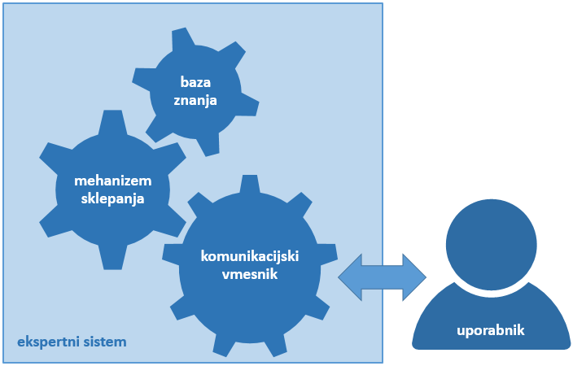

Licenca
To delo je na voljo pod pogoji slovenske licence Creative Commons 2.5:
priznanje avtorstva - nekomercialno - deljenje pod enakimi pogoji.
Celotna licenca je na voljo na spletu na naslovu http://creativecommons.org/licenses/by-nc-sa/2.5/si/. V skladu s to licenco je dovoljeno vsakemu uporabniku delo razmnoževati, distribuirati, javno priobčevati, dajati v najem in tudi predelovati, vendar samo v nekomercialne namene in ob pogoju, da navede avtorja oziroma avtorje in izdajatelja tega dela. Če uporabnik delo predela, kar pomeni, da ga spremeni, preoblikuje, prevede ali uporabi to delo v svojem delu, lahko predelavo dela ponudi na voljo le pod pogoji, ki so enaki pogojem iz te licence oziroma pod enako licenco.

Ekspertni sistemi
Ekspertne sisteme (ang. Expert Systems – ES) smo omenili na začetku učne enote. Ko smo govorili o metodi odločanja s pomočjo metod umetne inteligence, smo se sklicevali nanje, omenili pa smo tudi lupine ekspertnih sistemov. Smiselno je, da jih nekoliko bolje spoznamo.
Zaradi njihovega znanja in razumevanja določenega področja se pogosto zanašamo na strokovnjake. Kadar se počutimo slabo, obiščemo zdravnika; če avto noče vžgati, ga odpeljemo k mehaniku; če želimo graditi hišo, se obrnemo na arhitekta itd.
Ekspertni sistemi delujejo podobno kot človek – ekspert. Ekspert ne le da zna poiskati rešitve zahtevnih problemov, te rešitve zna tudi pojasniti. Prvi ekspertni sistemi so nastali v sedemdesetih letih prejšnjega stoletja. Ekspertni sistemi so bili med prvimi resnično uspešnimi oblikami programov umetne inteligence.
Ime »ekspertni sistem« izhaja iz tega, da sistem deluje kot strokovnjak na določenem področju – ekspert. Ekspertni sistemi (primeri) modelirajo sklepanje, presojo, odločanje ob nezanesljivih ali nepopolnih podatkih in imajo sposobnost pojasnjevanja svojega poteka reševanja problema. Zgradbo ekspertnega sistema prikazuje spodnja slika.

Baza znanja (ang. Knowledge Base) vsebuje znanje, ki je potrebno za reševanje določenega razreda problemov. Predstavljamo si jo lahko kot podatkovno bazo, ki je organizirana tako, da jo je možno uporabiti za transparentno reševanje problemov, kar pomeni, da imamo vpogled v potek tega reševanja od podatkov do rezultata.
Baza znanja vsebuje znanje določenega področja (domene), ne vsebuje pa znanja, kako ga uporabiti za reševanje določenih problemov. Za to skrbi mehanizem sklepanja.
Mehanizem sklepanja (ang. Inference Engine) nadzira in usmerja uporabo znanja pri reševanju konkretnega problema. Izbira dele znanja iz baze znanja, ki ga uporabi za reševanje problema, in vrstni red, kako jih kombinirati, da pride sistem v končni fazi do rešitve problema. Mehanizem sklepanja v veliki meri ni odvisen od domene znanja, zato ga praviloma uporabljamo pri bazah znanja različnih področij. Zelo pomembna naloga mehanizma sklepanja je razlaga poti do končnega rezultata.
Uporabniški vmesnik (ang. User Interface) skrbi za komunikacijo med uporabnikom in sistemom: z bazo znanja in z mehanizmom sklepanja. Uporabniku omogoča, da lahko posega v bazo znanja. Tako kot velja za vse uporabniške vmesnike, je tudi za uporabniški vmesnik za ekspertne sisteme pomembno, da vsebuje kakovostno grafiko in omogoča učinkovito komunikacijo z uporabnikom.
Za gradnjo ekspertnih sistemov obstaja več računalniških programov – lupin ekspertnih sistemov (ang. Expert Systems Shells – ESS), ki vsebujejo uporabniški vmesnik in mehanizem sklepanja, a imajo prazno bazo znanja.
Uporabnik mora dodati bazo znanja z določenega področja. Pri gradnji sistema sodeluje tehnolog znanja, ki gradi bazo znanja s pomočjo intervjujev z eksperti določenega področja in iz drugih virov podatkov.
Tehnolog znanja bazo znanja vgradi v lupino sistema in pomaga pri vrednotenju in dopolnjevanju sistema. Končni uporabnik takega sistema običajno ni ekspert s tega področja, ampak manj izkušenj uporabnik, ki lahko s pomočjo sistema izboljša svoje delo.
Znanje, pridobljeno iz knjig, je eksplicitno znanje, ki ga je najlažje pridobiti in preoblikovati, a za uspešen ekspertni sistem je nujno tudi implicitno znanje, ki ga tehnolog znanja pridobi v razgovorih z ljudmi s tem znanjem.
Zajemanje znanja, ki ga imajo ljudje – eksperti, je težavno. Razlog je v tem, ker je znanje, ki so si ga nabirali ob študiju in izkušnjah pri reševanju problemov, preraslo v intuitivni občutek, kako se lotiti problema. Nekateri podatki, ki jih računalniško podprt sistem nujno potrebuje, se zdijo ekspertu nepotrebni, ker so za človeka očitni (na primer spol pacienta).
Bazo znanja lahko gradimo z uporabo ustreznih programov tudi strojno. Programi za strojno učenje (in/ali podatkovno rudarjenje) iz množice podatkov nekega področja, izluščijo znanje, potrebno za reševanje problemov s tega področja. Tako se čas gradnje sistema močno skrajša, vloga ekspertov pa je v tem primeru preverjati pravilnost tako zgrajene baze znanja.